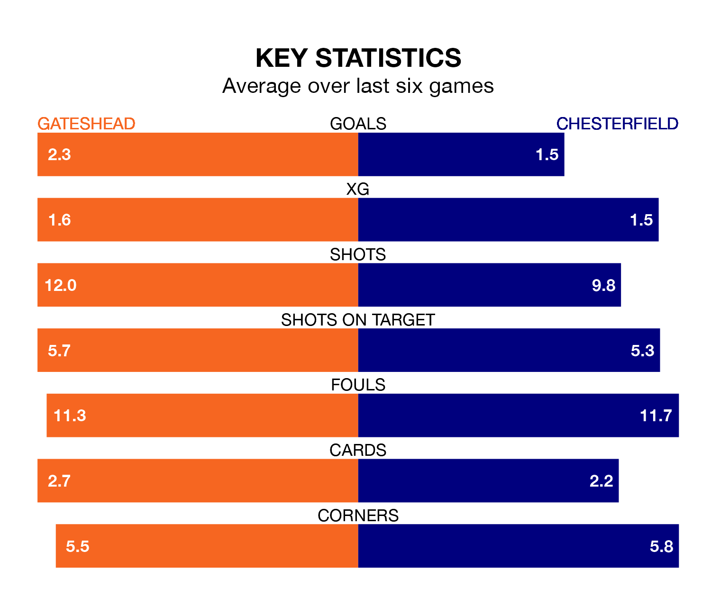

Chesterfield travel to the Gateshead International Stadium for Monday's late match against Gateshead looking to bounce back from defeat last time out in the National League.
The Spireites, who sit top of the league after 44 games, fell to a 1-0 away defeat to Wealdstone on Saturday.
They face a Gateshead side who also lost their last match, a 2-1 defeat to Maidenhead United, and who sit seventh in the table.
With 102 goals in 44 games so far this season, Chesterfield are the league's highest scorers with 2.3 goals per game. And they are conceding fewer than average, letting in 61 goals at a rate of 1.4 per game.
Gateshead are also above average scorers, with 2.0 goals per game, compared to a league average of 1.5. They have conceded 1.4 goals per game.
The Tynesiders are in mixed form in the National League, with three wins and three losses from their last six games.
With a win and a draw over that period, the Spireites's form is worse – they have taken four points from 18, compared to the hosts' nine.
In the last five years, Gateshead and Chesterfield have played each other on four occasions. Gateshead won one of them and Chesterfield the other.
On average, the Tynesiders scored 0.8 goals and the Spireites 2.2 in those matches.
Their last meeting was on January 10, when Chesterfield won 5-0 at home.
Updated: 11:31 (UTC), 15/04/24